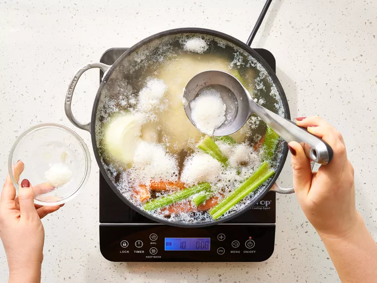
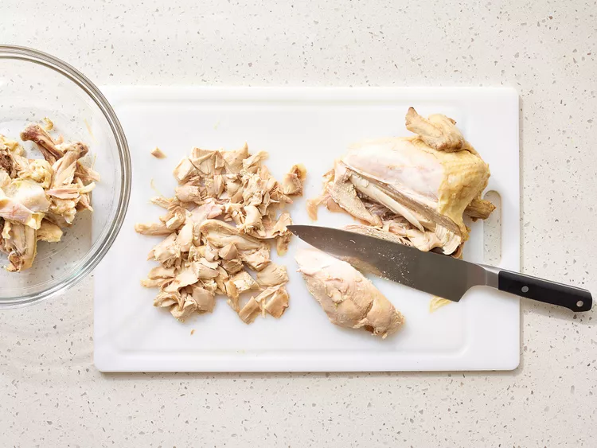
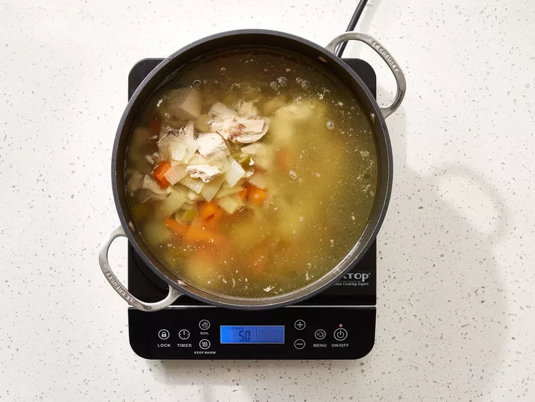
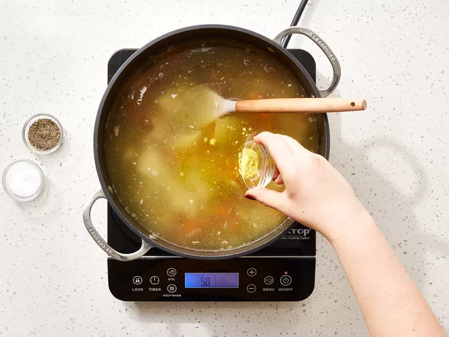

Trở về trang chủ
Công thức súp gà
Công thức của web Allrecipes
Nguyên liệu
- 1 con gà nguyên con (3 pound)
- 4 cà rốt, cắt đôi
- 4 nhánh cần tây, cắt đôi
- 1 củ hành tây lớn , cắt đôi
- nước để che phủ
- muối và hạt tiêu cho vừa ăn
- 1 thìa cà phê hạt nêm gà (Tùy chọn)
Hướng dẫn
- Chuẩn bị đầy đủ nguyên liệu
-
Cho gà, cà rốt, cần tây và hành tây vào nồi súp lớn; thêm nước lạnh
vừa đủ ngập gà. Đun sôi ở lửa vừa; giảm lửa nhỏ và ninh liu riu, không
đậy nắp, cho đến khi thịt mềm ra khỏi xương, khoảng 90 phút. Thỉnh
thoảng vớt bọt nếu cần.

-
Lấy thịt gà ra khỏi nồi và để nguội cho đến khi có thể cầm được; chặt
thịt thành từng miếng và bỏ da và xương.

-
Lọc bỏ rau củ, giữ lại nước dùng; rửa sạch nồi súp và đổ nước dùng trở
lại nồi. Thái rau củ thành miếng nhỏ; cho thịt gà và rau củ đã thái
nhỏ trở lại nồi.

-
Đun nóng súp cho đến khi nóng đều; nêm muối, hạt tiêu và nước dùng gà
cho vừa ăn.

-
Dọn ra và thưởng thức!